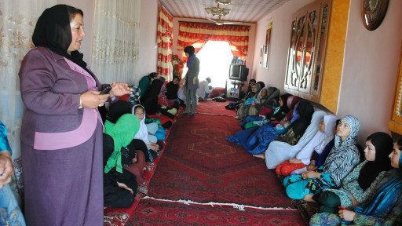

|
|

زن افغان، مادر پانزده فرزند و حاکم هفتصد خانواده
شنبه23 اردیبهشت 1391
بی بی سی: صبح بود که در روستای نوآباد به دیدار خانم ظریفه قاضیزاده رفتم. برای یافتن نشانی خانۀ خانم ظریفه کافی است از یکی از ساکنان این روستا بپرسی خانۀ آن زن قریه دار ( کد خدا) کجاست؟
نوآباد، یکی از روستاهای ولسوالی نهر شاهی ولایت بلخ در شمال افغانستان است و خانم ظریفه قاضی زاده، از سوی مردم این محل حاکم این روستا انتخاب شده است.
او دم در منتظر بود، از من استقبال کرد و با گرمی دعوتم کرد بروم داخل. حدود پنجاه زن که برخی از آنها کودکان شان را نیز با خود داشتند جمع بودند. این زنان از گوشه و کنار ولسوالی نهرشاهی برای نشستی به خانۀ قریهدار ظریفه آمده بودند.
او عکس هایی از کارهایش را به زنان نشان میداد و میگفت که دیگر هنگام آن است که همه زنان مثل او کار کنند و برای حق شان مبارزه کنند.
او میگفت:"ببینید من هم یک زن خانه بودم، امروز میتوانم با یک هزار نفر جلسه داشته باشم؛ میتوانم با مقامات بنیشیم حرف بزنم. در (کشورهای) خارج، زن رئیس جمهور میشود چرا در افغانستان نمیشود. ببیند(زنان در خارج) چقدر جرات دارند چقدر کار میکنند."
نشست به شکل رسمیاش پایان یافت اما این زنان یکی یکی مشکلات شان را با خانم قاضی زاده مطرح میکردند و او هم به هر یکی مشورت های مفصلی میداد.
محبوبیت قریهدار ظریفه تنها در میان زنان روستاهای نهرشاهی خلاصه نمیشود، او را مردان این اهالی نیز پذیرفته اند و خانم ظریفه هم به مشکلات همه رسیدگی کرده است.
مولوی سید محمد، یکی از اهالی روستای نوآباد در مورد ظریفه گفت:"کارهایی را که خیلی از مردان نمی توانند از عهدۀ آن برآیند، ظریفه جان آن را انجام میدهد."

شکست یا پیروزی
وقتی ظریفه از گذشتههایش میخواهد بگوید بغضی گلویش را میفشارد. او میگوید زمانی که عروسی کرد فقط ده سال داشت و پانزده ساله بود که مادر شد
ظریفهی پنجاه و یک ساله و مادر هشت دختر و هفت پسر است، او از بام تا شام برای مردم محل به خصوص برای زنان تلاش میکند.
درافغانستان این معمول نیست که قریهداران، زن باشند. قرنهاست که فقط مردان این کار را به عهده دارند. ولی ظریفه یک استثنا است.
او زمانی که در نخستین دور انتخابات پارلمانی افغانستان خود را نامزد کرد و نتواست برنده شود، به کسانی که به او رای داده بودند وعده داد که مسئولان را وارد خواهد کرد تا انرژی برق ولسوالی نهر شاهی را تامین کند.
او برای انجام این کار به کابل سفر کرد و از وزیر انرژی و آب دستور احداث یک نیروگاه برق در روستای نوآباد را گرفت.
پس از آن که ظریفه، روستای نوآباد را چراغان کرد، از سوی مردم این محل، حاکم این روستا انتخاب شد و حالا حدود شش سال از این ماجرا میگذرد.
چندی پیش شاید برای نخستین بار بود که مردم این منطقه حیرت زده زنی را در حال راندن تراکتور میدیدند. این زن کسی جز ظریفه قریهدار نبود.
او با تراکتور برای آبادی یک مسجد خاک آورده است، ماشین افتاده در یک گودال را بیرون کشیده است و گاهی هم برای نظارت از روستای نوآباد، لباس مردانه پوشیده است و در اطراف این روستا با موترسکلت دور زده است.
از کنیزی تا حکومت
وقتی ظریفه از گذشتههایش میخواهد بگوید بغضی گلویش را میفشارد. او میگوید زمانی که عروسی کرد فقط ده سال داشت و پانزده ساله بود که مادر شد.
او در اوایل زندگی مشترک، در خانه شوهرش هنوز اسباب بازی هایش را ترک نکرده بود. اما مرگ پدرش او را وادار کرد که دیگر اسباب و بازیهای کودکانه اش را با پدر یکجا دفن کند.
مرحله تلخ زندگی ظریفه، دورانی بود که در شهرستان دولت آباد در یک روستای دور افتادۀ ولایت بلخ با خانوادۀ شوهرش زندگی میکرد، او میگوید در آن زمان فرقی با یک کنیز نداشت.
در دوران حکومت طالبان، با شوهرش به مزارشریف آمد و به عنوان یک رضاکار (داوطلب) کودکان محل را واکسن می کرد و به شکل مخفی برای زنان محل زمینه سواد آموزی را فراهم کرده بود.
پس از حکومت طالبان، فعالیتهای ظریفه بیشتر شد. در شوراهای زنان سهم گرفت، زنان را تشویق به سهمگیری در انتخابات کرد تا این که خود قریهدار شد.
ظریفه حالا دیگر آن روستایی نیست، دیگر آن زن خانه نیست، او حالا میتواند از سلاح استفاده کند. او حالا مردان را راهنمایی و تادیب می کند.
برای پیشرفت روستای نو آباد تلاش می کند و گاهی خلاف کاران را نیز مجازات می کند.